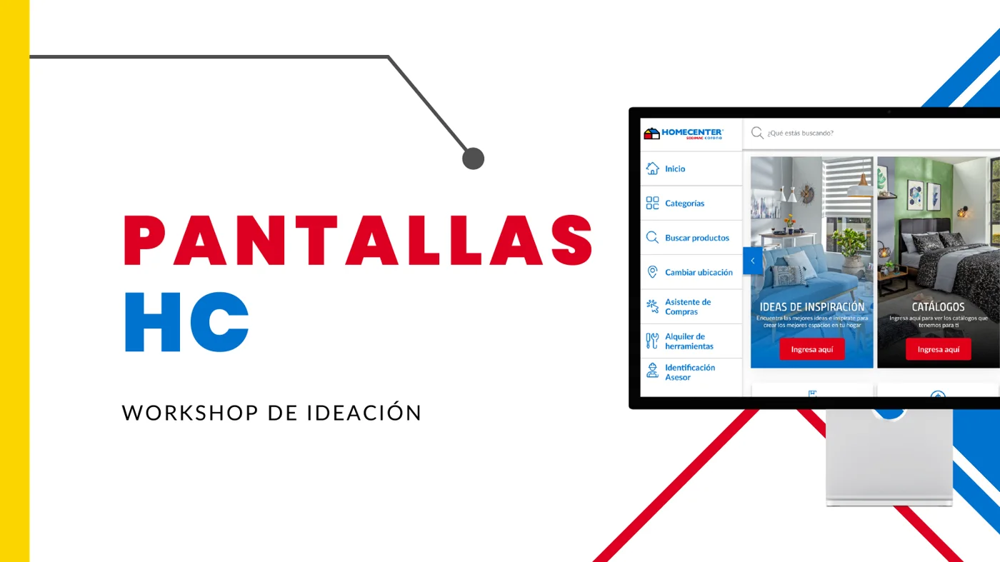
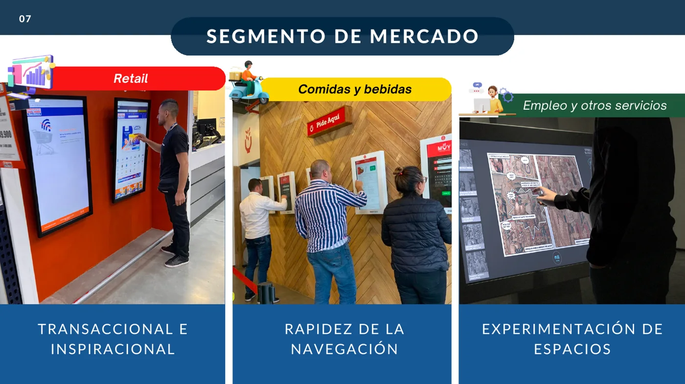
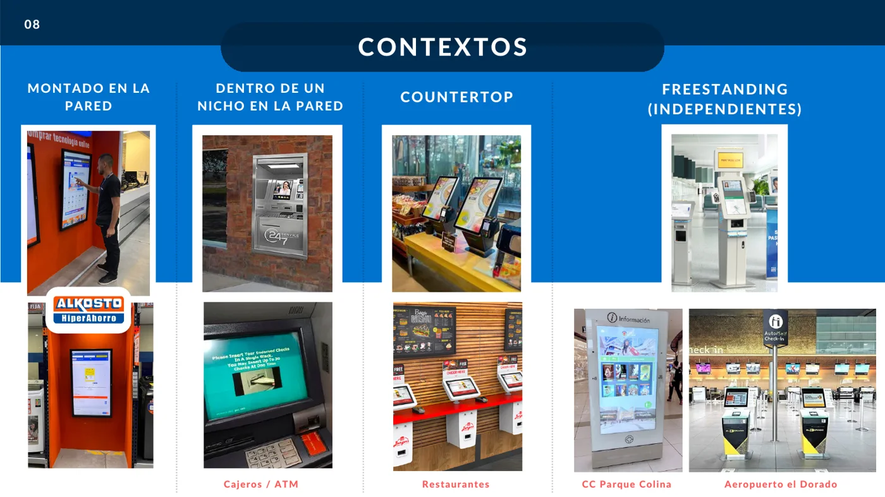
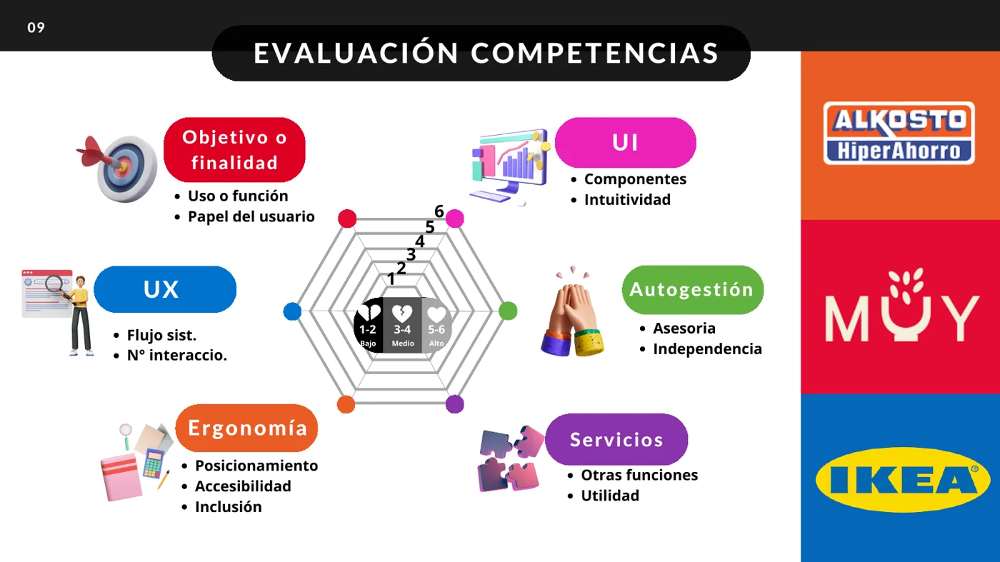
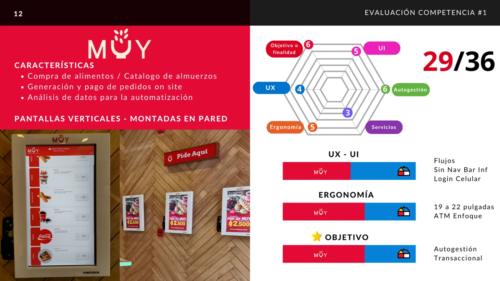
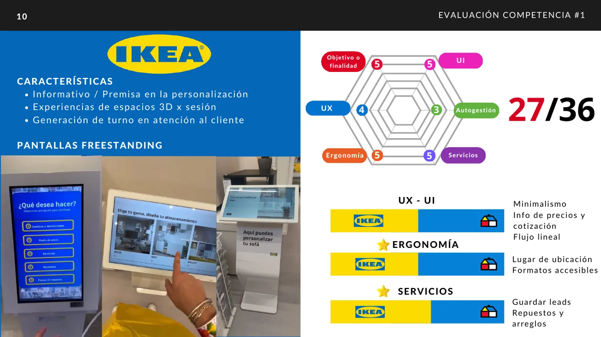
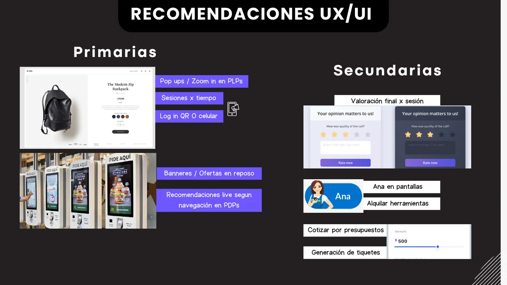
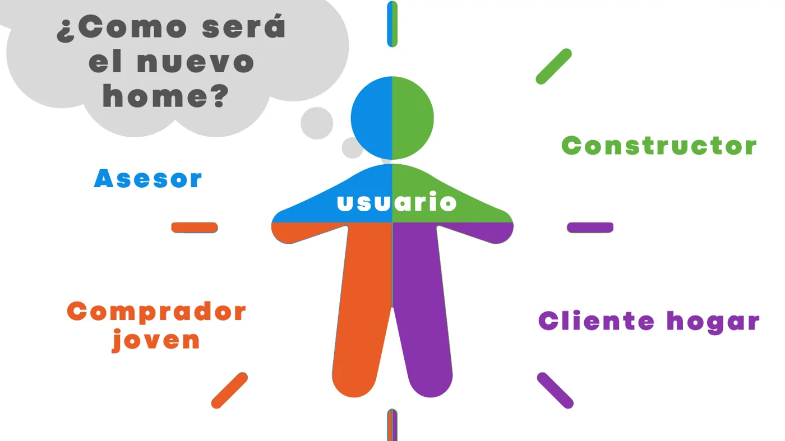
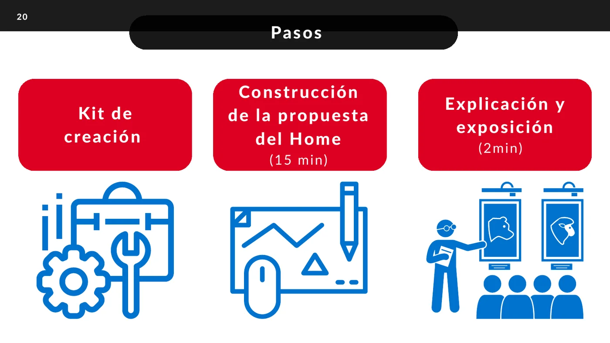

Antes de rediseñar el home de las pantallas táctiles en tienda, analicé cómo funcionan los quioscos en otros mercados y llevé a los equipos a co-crear el nuevo home por tipo de usuario.

Entender el contexto y las tendencias de los quioscos, y generar propuestas para el nuevo home.
Un benchmark de tres referentes evaluados con el mismo modelo de seis dimensiones.
Convertir las conclusiones en recomendaciones UX/UI primarias y secundarias.
Los equipos rediseñan el home para un tipo de usuario y votan los componentes de mayor valor.
Generar nuevas propuestas para el rediseño del home de las pantallas, según las oportunidades de mejora frente a la competencia y el mercado.
El desarrollo y el contexto de las pantallas en distintos mercados y las tendencias globales de los últimos años.
Nuevas ideas para el home de las pantallas, en UX y UI, a partir de las oportunidades de mejora encontradas.
Una pantalla táctil para acceder a información, expandir el catálogo y comprar en autoservicio.
La sesión avanza de la evidencia a la acción: objetivos, contexto, benchmark, taller co-creativo y conclusiones.
Estructuré la sesión en cinco bloques y abrí con un rompehielos que formó los equipos de trabajo.
Definí un modelo de seis dimensiones y lo apliqué a tres referentes para comparar con el mismo criterio.
Guié la actividad: reto de usuario, kit de trabajo, tiempos, exposición y votación.
Comparar referentes con criterios comunes.
Cómo lo apliquéPuntué objetivo, UI, UX, autogestión, ergonomía y servicios de 1 a 6.
Diseñar junto a los equipos pensando en usuarios concretos.
Cómo lo apliquéCada equipo rediseñó el home para un perfil: asesor, constructor, comprador joven o cliente hogar.
Separar lo que se hace primero de lo que puede esperar.
Cómo lo apliquéClasifiqué las recomendaciones en primarias y secundarias, y cerré con una votación de componentes.
Miré segmentos de mercado y contextos de instalación, y evalué tres referentes con un mismo modelo.





Usar las pantallas como espacios que motivan a pensar en proyectos e ideas.
Reducir los niveles de navegación y las interacciones dentro de las pantallas.
Adaptar la navegación y la compra a las preferencias, y permitir guardar diseños para cotizar después.
Ampliar los usos de las pantallas más allá de lo inspiracional y lo transaccional.
Tendencias globales: personalización, inteligencia artificial (reconocimiento facial, comando de voz, realidad aumentada) y seguridad y confianza.
Convertí lo aprendido en recomendaciones UX/UI y las separé en primarias y secundarias.

La pregunta de la actividad fue “¿cómo será el nuevo home?”, y cada equipo la respondió para un tipo de usuario.


El formato lleva de la evidencia a una decisión compartida. Esto es lo que deja cada sesión.
Cada equipo termina con un home rediseñado para su perfil de usuario.
La votación señala qué piezas de las propuestas resultan más valiosas.
Las recomendaciones primarias y secundarias ordenan qué probar y qué diseñar primero.
Este caso muestra el diseño y las conclusiones de la sesión, no resultados medidos.